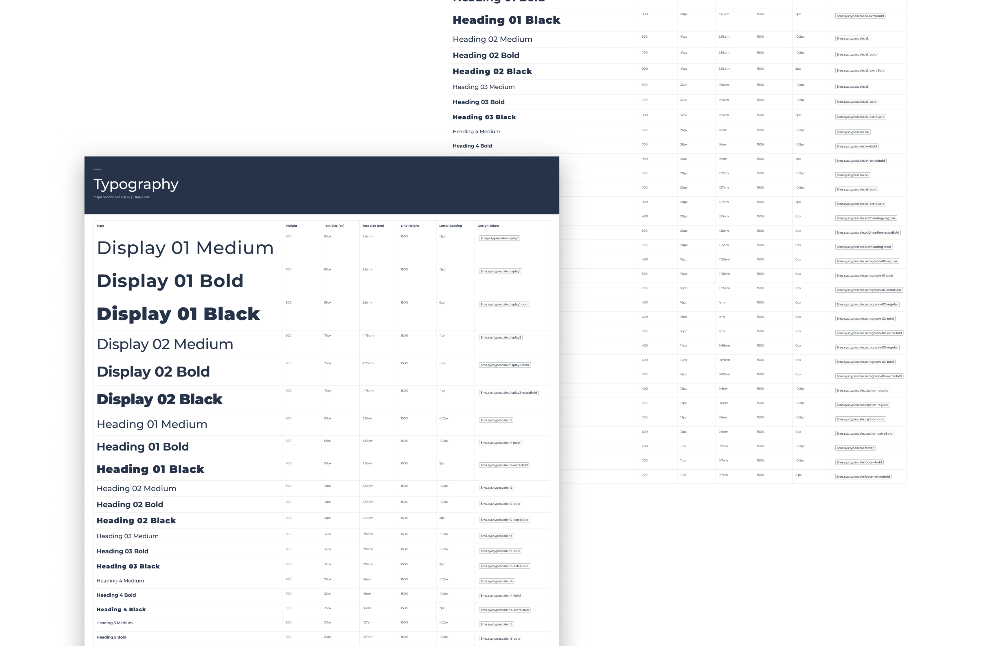
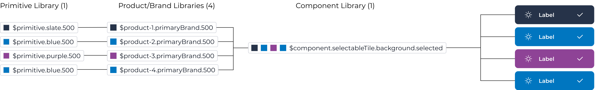

Intro
My role was to own the Medical Solutions 3.0 Design System as its own product. This was the largest project I have ever been responsible for leading and executing; but also the most rewarding by far.
As the system would be actively used while I am building it; I needed to work incrementally and mitigate risk throughout. Although I encountered more than a few bumps in the road along the way, each problem was a unique challenge that pushed me to discover what was possible.
Establishing Structure
Using Atomic Design principles by Brad Frost as inspiration I created our Design System structure. Divided up into four main sections: atoms, molecules, organisms, and templates. Each “level” builds upon the last - starting with the atoms, and eventually leading to page templates. This created an extremely flexible system that is easy to use and navigate.

Governance Process
Establishing a process to govern our Design System helps users understand what to do and when. However, this process did not yet exist.
Working with UX leads I created and implemented our Design System Governance Process. This process defined how a component should be added to, updated, or removed from our Design System. To aid users with understanding the process, I created a flow diagram and added it to our system as a reference.
Finding sources of feedback
Creating a highly flexible system that works for a wide range of use cases is not something that can be done in a vacuum. I needed to facilitate constant feedback from many different sources to validate my work.
Design System and Component Library Retro
Hosting the Retro, I brought together design and development leads to discuss our Design System/Component Library. We focused on what was working, what was not, and what we could improve on.
Office Hours
I wanted to make sure I had blocked off time available, twice a week, where Designers could meet with me as a resource. Designers asked questions about components, how to use them, which one to use for a specific use case, or potential updates they wanted to request.
Component Review
On a weekly basis I held a component review, bringing together UX Leads. We discussed new component requests, how the components might be used in their product(s), any concerns, and to review component documentation. This review was invaluable because it allowed me to validate component utility and flexibility cross-functionally.
These are just a few of the many essential feedback loops I incorporated into our Design System.
Establishing A Typography Scale
I implemented a major second Typography scale, using a 16px base. This made it easier for designers to create a consistent content hierarchy across the user experience.
Creating Component Documentation
To help designers when deciding which component to use and when, clear documentation was needed. Unfortunately, due to MS 3.0 being a new library, there was no existing documentation.
Creating good component documentation is essential to any Design System or Component Library. It is extremely helpful for recording design decisions, development specs, micro-interactions, anatomy, and usage standards.
Having documentation to reference was an essential tool to create consistency in our products.
Utilizing Tokens + Variables
Utilizing tokens and variables within our design system enabled me to support our five products using the same components. Reducing the number of variants needed for each component by 80%.
Recording Changes
As time goes on, it becomes more challenging to remember what has changed in a Design System or component. Wanting to avoid this, I documented what changed in every single library update published; using a change log. Over time this evolved to include a detailed change log on each component page; documenting what changed after and what the component looked like before.

Results
MS 3.0 is a huge success. The system is actively used by all our designers, making up at least 80% of their work. Additionally, the Storybook Component library is being implemented incrementally in our products. As a dedicated resource for our Design System, I was able to create flexible headless components and limit one-off additions to the system. In doing so, I was able to create an extremely capable and robust Design System.
Key Takeaways
Due to the complexity, enormity, and ever-changing nature of this project; I found myself tested in ways I have never been. The unique nature of our MS 3.0 Design System tested everything I knew and thought I knew about Design Systems. The process of developing and maintaining our system pushed me to think outside the box, face my fears, and learn how to construct flexible components that can be used at scale.